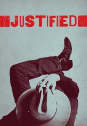

")
 
 IMDB-Wertung: 8.6 / 10
IMDB-Wertung: 8.6 / 10  Metascore:
Metascore: 
Widerwillig muss U.S. Marshal Raylan Givens in seine Heimatstaat Kentucky zurückkehren, nachdem er am helllichten Tag einen Gangster in bester High-Noon-Manier ins Jenseits befördert. Der Job in der Provinz gestaltet sich alles andere als ruhig - Amerikas Hinterland erweist sich als korrupter Sumpf aus Drogenhandel, Gewalt und Rassismus. Im Handumdrehen wird Givens von seiner Vergangenheit eingeholt,Widerwillig muss US Marshal Raylan Givens in seine Heimatstaat Kentucky zurückkehren, nachdem er am helllichten Tag einen Gangster in bester High-Noon-Manier ins Jenseits befördert. Der Job in der Provinz gestaltet sich alles andere als ruhig - Amerikas Hinterland erweist sich als korrupter Sumpf aus Drogenhandel, Gewalt und Rassismus. Im Handumdrehen wird Givens von seiner Vergangenheit in Form seines alten Kumpels Boyd Crowder eingeholt ...
Jahr: 2010
Dauer: 52 Minuten
FSK: 18
Land: USA Studio: FX NetworkTonspuren: DD5.1 - ,
Untertitel: Deutsch,
Auflösung: 720p (1280x720) Größe: 1372 MB
Genre: Action, Thriller, Drama, Krimi, Liebe, TV-Serie
Regisseur:  Adam Arkin, Jon Avnet, Peter Werner, Michael Dinner, John Dahl, Bill Johnson, Michael W. Watkins, Gwyneth Horder-Payton, Don Kurt, Dean Parisot,
Adam Arkin, Jon Avnet, Peter Werner, Michael Dinner, John Dahl, Bill Johnson, Michael W. Watkins, Gwyneth Horder-Payton, Don Kurt, Dean Parisot,  Tony Goldwyn, Michael Pressman, Rod Holcomb, Michael Katleman, Frederick King Keller, John David Coles, Billy Gierhart, Lesli Linka Glatter,
Tony Goldwyn, Michael Pressman, Rod Holcomb, Michael Katleman, Frederick King Keller, John David Coles, Billy Gierhart, Lesli Linka Glatter,  Peter Weller
Peter Weller
Drehbuch: Fredrik Backman
Soundtrack:
Darsteller:
 Timothy Olyphant als Raylan Givens
Timothy Olyphant als Raylan Givens Nick Searcy als Art Mullen
Nick Searcy als Art Mullen Joelle Carter als Ava Crowder
Joelle Carter als Ava Crowder Jacob Pitts als Tim Gutterson
Jacob Pitts als Tim Gutterson Walton Goggins als Boyd Crowder
Walton Goggins als Boyd Crowder Jere Burns als Wynn Duffy
Jere Burns als Wynn Duffy Rick Gomez als ADA David Vasquez
Rick Gomez als ADA David Vasquez Raymond J. Barry als Arlo Givens
Raymond J. Barry als Arlo Givens Jesse Luken als Jimmy Tolan
Jesse Luken als Jimmy Tolan Damon Herriman als Dewey Crowe
Damon Herriman als Dewey Crowe Jeremy Davies als Dickie Bennett
Jeremy Davies als Dickie Bennett Mykelti Williamson als Ellstin Limehouse
Mykelti Williamson als Ellstin Limehouse Kaitlyn Dever als Loretta McCready
Kaitlyn Dever als Loretta McCready Jim Beaver als Sheriff Shelby Parlow
Jim Beaver als Sheriff Shelby Parlow Mel Fair als Nelson Dunlop
Mel Fair als Nelson Dunlop Michael Rapaport als Daryl Crowe Jr.
Michael Rapaport als Daryl Crowe Jr. Mary Steenburgen als Katherine Hale
Mary Steenburgen als Katherine Hale Demetrius Grosse als Errol
Demetrius Grosse als Errol William Ragsdale als Gary Hawkins
William Ragsdale als Gary Hawkins Ron Eldard als Colton 'Colt' Rhodes
Ron Eldard als Colton 'Colt' Rhodes Sam Elliott als Avery Markham
Sam Elliott als Avery Markham Neal McDonough als Robert Quarles
Neal McDonough als Robert Quarles Peter Murnik als Trooper Tom Bergen
Peter Murnik als Trooper Tom Bergen Joseph Lyle Taylor als Doyle Bennett
Joseph Lyle Taylor als Doyle Bennett Margo Martindale als Mags Bennett
Margo Martindale als Mags Bennett Alicia Witt als Wendy Crowe
Alicia Witt als Wendy Crowe Sam Anderson als Lee Paxton
Sam Anderson als Lee Paxton A.J. Buckley als Danny Crowe
A.J. Buckley als Danny Crowe John Kapelos als Picker
John Kapelos als Picker Amy Smart als Allison
Amy Smart als Allison Garret Dillahunt als Ty Walker
Garret Dillahunt als Ty Walker Kevin Rankin als Devil
Kevin Rankin als Devil Mickey Jones als Rodney 'Hot Rod' Dunham
Mickey Jones als Rodney 'Hot Rod' Dunham David Andrews als Sheriff Tillman Napier
David Andrews als Sheriff Tillman Napier Jeff Fahey als Zachariah
Jeff Fahey als Zachariah Brad William Henke als Coover Bennett
Brad William Henke als Coover Bennett Stephen Root als Judge Mike Reardon
Stephen Root als Judge Mike ReardonDatei: X:\FSK18-Serien\Justified\S01\Justified S01E01.mkv seit 28.04.2016
Festplatte: FSK18
 Es gibt insgesamt 17 Filme in der Gruppe 'FSK18-Serien'
Es gibt insgesamt 17 Filme in der Gruppe 'FSK18-Serien'